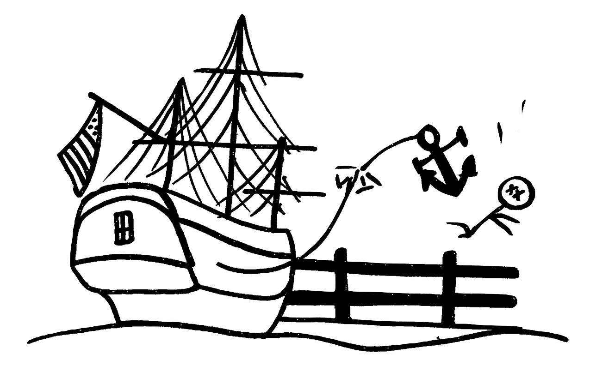

Columbia: 1 Death
On December 24, 1998, a heavy metal cleat fastened to the hull of the Sailing Ship Columbia tore loose, striking one employee and two park guests. One of the guests, a 33-year-old man, died of a head injury. The normal tie line, an inelastic hemp rope designed to break easily, was improperly replaced for financial reasons by an elastic nylon rope which stretched and tore the cleat from the ship's wooden hull. Disney received much criticism for this incident due to its alleged policy of restricting outside medical personnel in the park to avoid frightening visitors, as well as for the fact that the employee in charge of the ship at the time had not been trained in its operation. After this incident, Disney reinstated lead foremen on most rides and the Anaheim Police Department placed officers in the park to speed response. This accident resulted in the first guest death in Disneyland's history that was not attributable to any negligence on the part of the guest. California's Division of Occupational Safety and Health investigated the incident and found fault with the training of the park employee who placed the docking line on the cleat. The cleat was not designed to help brake the ship and the employee should have been trained to recognize when the ship was approaching too fast. Ride procedures called for the ship's captain to reverse the ship if it overshot the dock and re-approach the dock at the correct speed. Disney was fined US$12,500 by Cal/OSHA and settled a lawsuit brought by the victim's survivors for an estimated US $25,000,000.